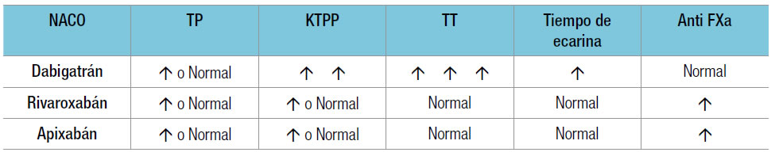

Se debe realizar inmediatamente antes de la siguiente dosis. Las pruebas cualitativas a la cabecera del paciente midiendo la presencia o ausencia de estos agentes en la orina pueden ser útiles en el futuro en un enfermo internado antes de una cirugía general, una anestesia peridural o un tratamiento fibrinolitico; si hubo una falla renal; y en el paciente ambulatorio para controlar la adherencia al tratamiento.
El ejemplo más frecuente sobre su utilidad, más que el sangrado, es la necesidad de autorizar un procedimiento invasivo o una cirugía. El manejo de la suspensión es, en estos fármacos de acción corta, más importante que la determinación de laboratorio en sí, pero esta puede ser requerida por el profesional a cargo del procedimiento (cirujano, endoscopista o anestesista).
Si se desea saber si hay acumulación del fármaco por insuficiencia renal o por interacciones medicamentosas, la determinación más útil es antes de la siguiente dosis (Cmin o Cmax).
El efecto anticoagulante de los nuevos anticoagulantes (NACO) puede medirse por tres tipos de pruebas:
1. Las primeras son las pruebas no específicas, que proveen una estimación cualitativa de la presencia o no de fármaco y una pobre estimación de la concentración de este. Con el dabigatrán el tiempo de trombina (TT) y, en menor grado, el tiempo de tromboplastina parcial activada (TTPa); para el rivaroxabán, el tiempo de protrombina (TP) medido con un reactivo sensible (p. ej., Neoplastin plus® y RecombiPlasTin®), y para el apixabán, Triniclot® PT Excel S.
2. Las segundas son las pruebas con calibración o estándares que dan información precisa de la concentración plasmática del anticoagulante en forma cuantitativa. Para el dabigatrán sería el inhibidor directo de trombina medido con Hemoclot®, un TT diluido realizado con calibradores para dabigatrán, y para rivaroxabán o apixabán, los anti-Xa.
3. La tercera prueba sería la medición de la concentración plasmática del fármaco.
Hay que tener en cuenta en las pruebas de laboratorio que el valor de los resultados es limitado porque no se cuenta con datos en el contexto de los pacientes con sangrado agudo. En la Tabla 1 se muestra el efecto de los NACO sobre las pruebas de la coagulación.
Tabla 1.Efecto de los NACO sobre las pruebas de coagulación. Analizaremos el laboratorio con las pruebas no específicas con cada fármaco en particular:
Con dabigatrán, el TT tiene una correlación directa con la concentración del fármaco, pero se prolonga rápidamente en dosis baja. Si el TT es normal se puede suponer que la dosis de dabigatrán es muy baja, pero no tiene utilidad como indicador de la concentración del fármaco. El TP es insensible para el dabigatrán; por lo tanto, no es una prueba útil. Los equipos conocidos como point-of-care no deberían utilizarse para juzgar si hay dabigatrán circulante en una muestra. El TTPa muestra una relación curvilínea con relación a la concentración de dabigatrán. A altas dosis el TTpa se hace incoagulable. Se prolonga dos veces en el pico máximo del fármaco y a las 12 horas en el tratamiento crónico se prolonga 1,5 veces. La sensibilidad del reactivo utilizado podría hacer variar los valores mencionados del pico máximo y el descenso. El tiempo de ingesta de la última toma puede hacer variar estos resultados, así como los instrumentos utilizados para la medición. Los hematólogos deben tener en cuenta la sensibilidad del reactivo utilizado y el tiempo desde que se administró el fármaco para no malinterpretar los resultados. Se podría decir que un TTPa normal excluye la sobredosis de dabigatrán. Con el rivaroxabán, el TP muestra una respuesta lineal y se prolonga en forma similar a la inhibición de Xa. Sin embargo, hay que tener en cuenta la sensibilidad de cada reactivo. Si los reactivos son sensibles se podría decir que una prueba normal excluye la sobredosis. Con el apixabán, el TP tiene escasa utilidad por su baja sensibilidad y reproducibilidad. El TP modificado o diluido, el antifactor Xa (HepTest®) y el del sustrato cromogénico son superiores al TP convencional para determinar el efecto del apixabán. El TTPa no tiene utilidad.
La ventaja de los NACO es que no requieren un control rutinario; sin embargo, en los informes desde finales de 2013 se plantea que debido a la amplia variabilidad en los niveles plasmáticos a dosis fijas de 150 mg dos veces por día de dabigatrán (2,3 ng/mL hasta 1.000 ng/mL), cuando el valor terapéutico es de 50 ng/mL a 300 ng/mL, no deberían medirse sus niveles plasmáticos. En la actualidad no hay laboratorios en el país que midan el principio activo en el plasma. Este efecto no se ha descrito con el rivaroxabán ni con el apixabán.
En resumen: el TP y el TTPa no dan información precisa del nivel de anticoagulación del rivaroxabán y del dabigatrán, respectivamente; se pueden utilizar para descartar sobredosis. Sin embargo, hay que conocer la sensibilidad de los reactivos utilizados en el laboratorio. Estas pruebas de laboratorio no tienen sustento científico en los pacientes con un sangrado agudo.
Los NACO han sido diseñados con la intención de que sean administrados en dosis fijas sin requerir un control de la coagulación.
Sin embargo, el uso juicioso de las pruebas globales de coagulación ampliamente disponibles (tiempo de Quick, TTPa y tiempo de trombina) se puede emplear en los pacientes con insuficiencia renal, en interacciones medicamentosas o en casos de duda de la adherencia al tratamiento.